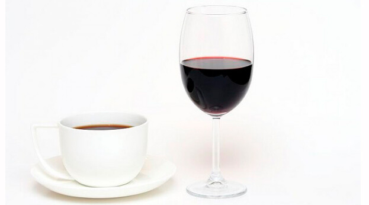

 El vino es un elixir delicioso que por sí solo tiene la robustez necesaria para cautivar el paladar de muchos. Sin embargo, es común que se mezcle con otros ingredientes para crear bebidas como el tinto de verano y la sangría. Aunque las posibilidades de creación con el vino tinto no paran ahí, hay una bebida caliente ideal para la temporada de lluvias que puedes degustar para entrar en calor y disfrutar de las tardes. Se trata nada más y nada menos que del café con vino tinto, una combinación que, aunque muchos podrían encontrar bizarra, es bastante aromática, apetecible y accesible.